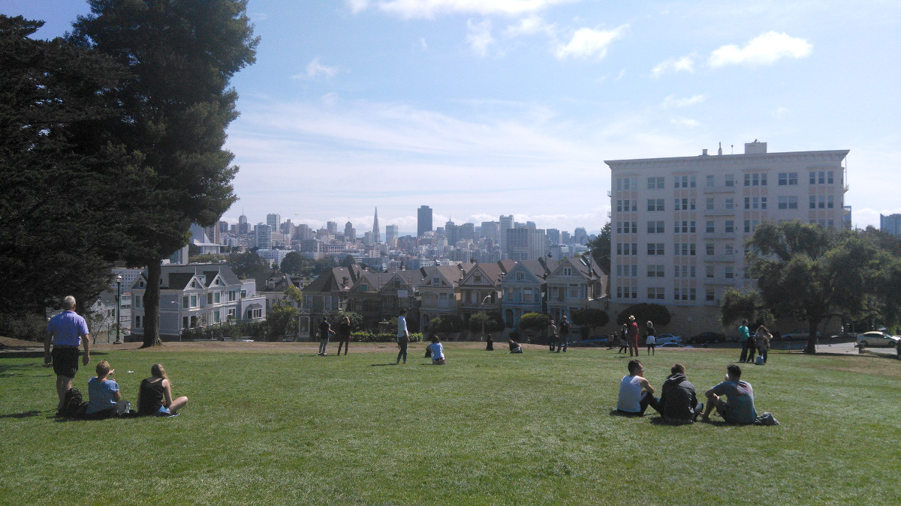

Meaningful connections
My sister is leaving to the UK tomorrow for 5 years for her academic career. I am thrilled for her but I am only starting to realise that there may have been too many missed opportunities to get to know each other a bit more. So I have been trying to make up for the time lost over the past couple of weeks by spending some quality brother - sister time.
During one of the conversations, my sister told me that a lot of people have disappointed her. Why? I ask. Because nobody really cared that she is leaving. This includes people from church, a church we have been attending for the past 17 years. A lot of people came and went during that time, but when it is finally time for her to leave, there appeared to be noone who really cared.
I was devastated to hear this. How could she spend the past 17 years in Sydney and surrounded herself with such pathetic uncaring people?
What went wrong? I don't know but I know that it's not her fault. Although she could be critical at times, she is the most loyal, hard working and generous person I know. She didn't do anything wrong. Rather I think it was the circumstance that she was in pursuit of her academic career. For the past three years, she has been working on her PhD at home She went to university around once a week. She didn't have the chance to meet new people and didn't really question the people who surrounded her in her life.
In this modern society we're always pursuing our education, career and ultimately romantic love where we aspire to create a family of our own. But beyond these pursuits, one of the aims of life is to make meaningful human connection with others - whether it be romantic love, friendship love, or parental love. Life is worth it once we surround ourselves with people whom we love and love us. Although how important this may be, we don't really take the time to question the people who surround us everyday whether we have these meaningful connection with them.
So what does it mean to have meaningful connection?
From here on, I have decided that meaningful connection means this: A person who is able to reciprocate love. It doesn't matter whether they work in Google or don't yet have a job, completed their PhD or have only graduated high school. What we need are people who care.
So it is time to ask ourselves the people surround us everyday - our colleagues, high school friends, university friends, random hang out friends. The thing is, we might not realise it but we may not have a meaningful connection with these people - yet. We need to be ready to invest more love in these people and tell them that you do indeed care. But first, we need to determine whether they are worthy of our love. We need to ask ourselves these questions: Will they reciprocate the same love? Do they care about me, and do I care about them? If not, I think it's time to move on and find a new set of friends.
I am happy that my sister will be starting a new chapter in life. From here one, I hope that we both try hard to find people worthy of love and make meaningful connections with them.